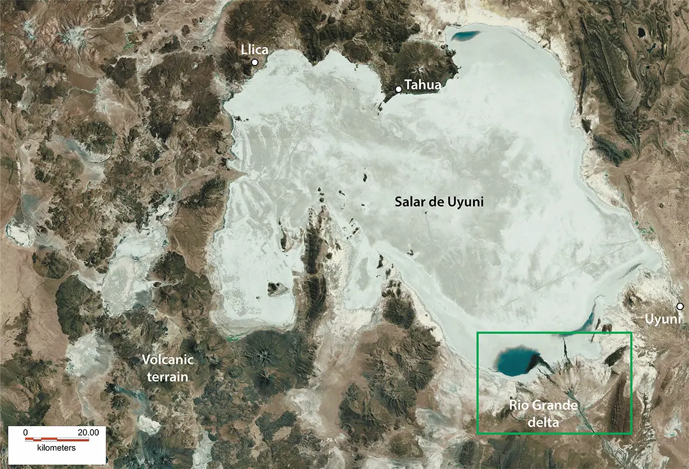
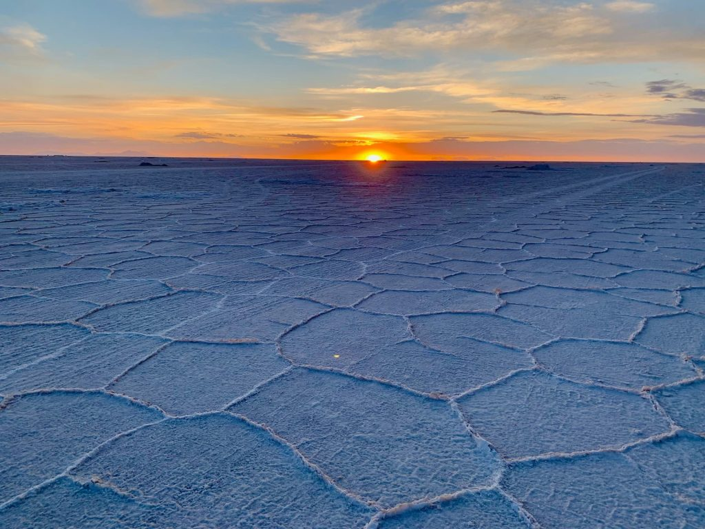
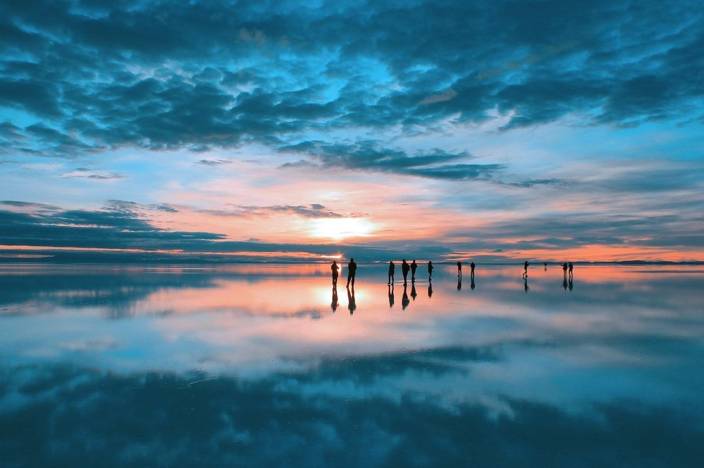
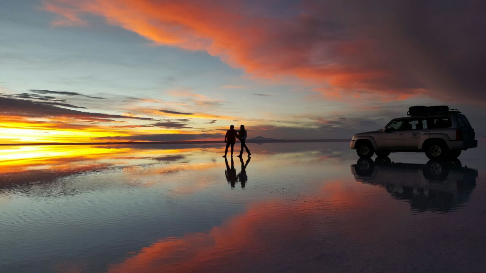
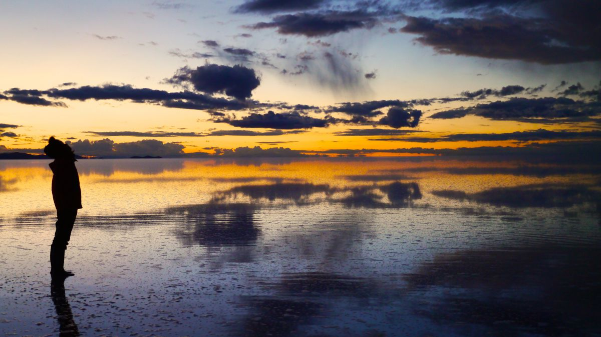
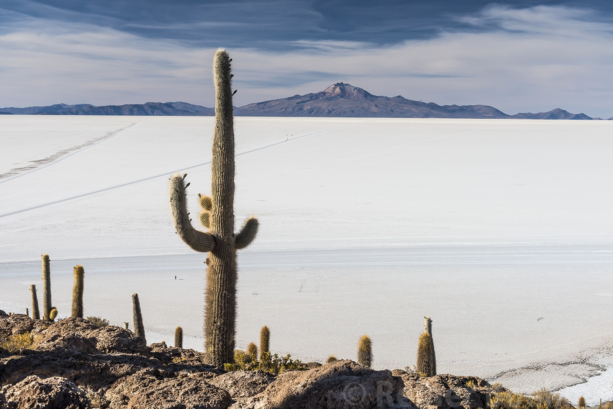
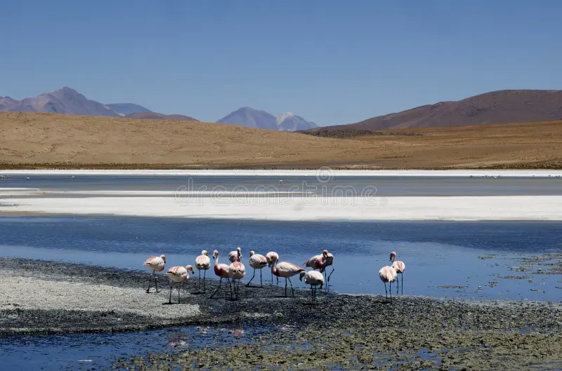
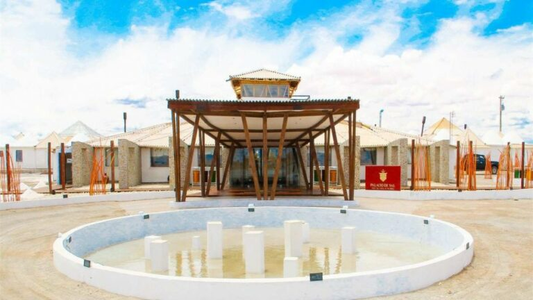

Un Tesoro Natural de Bolivia
El Salar de Uyuni, ubicado en el departamento de Potosí, Bolivia, es el mayor desierto de sal del mundo y uno de los destinos turísticos más impresionantes, famoso por sus paisajes surrealistas y espejos de agua.
Ubicación del Salar
Departamento de Potosí, donde se encuentra el Salar de Uyuni.
Galería de Imágenes

Amanecer en el Salar de Uyuni

Reflejo en el Salar de Uyuni

Atardecer en el Salar de Uyuni

Salar de Uyuni durante la temporada de lluvias

Isla Incahuasi, famosa por sus cactus

Flamencos en el Salar de Uyuni

Hotel de sal en el Salar de Uyuni
Datos Curiosos
- Es el salar más grande del mundo, con una extensión de 10,582 km².
- En la época de lluvias, se transforma en un gigantesco espejo natural.
- El Salar de Uyuni contiene aproximadamente 7% de las reservas mundiales de litio.
- La Isla Incahuasi, famosa por sus cactus, está situada en el medio del salar.
- El Salar alberga una diversidad de vida silvestre, incluidos flamencos y otras aves.
Recomendaciones
Visitar la Isla Incahuasi
Una experiencia única en el centro del salar, famosa por sus enormes cactus.
Tour en 4x4 por el Salar
Un recorrido inolvidable por las vastas extensiones de sal y paisajes surrealistas.
Fotografía al amanecer y atardecer
Captura momentos mágicos cuando el salar se llena de colores vibrantes.